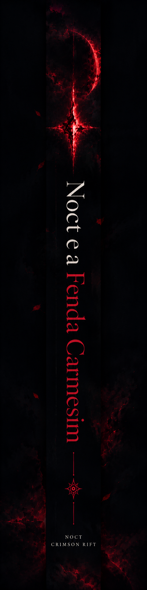
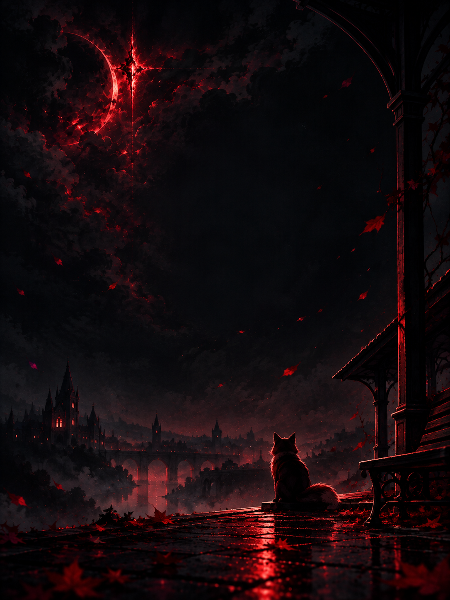

F. G. Santos
F. G. Santos


Algumas portas chamam com a voz de quem você perdeu.
Noct não procura salvar o mundo. Procura só uma razão para continuar nele.
Anos atrás, Mira saiu antes do amanhecer e deixou um bilhete em cima da mesa: Volto logo. Ele a procurou em todas as estações, menos na deles. Depois parou de procurar e aprendeu a viver como quem tenta esquecer.
Mas, quanto mais ele tenta esquecer, mais alto alguma coisa chama. Uma brasa atrás das costelas, acesa desde o bilhete, que puxa sempre para o mesmo lado.
Para Pedravelha, a vila de pedra onde ele um dia andou meio passo atrás dela, em tardes de feira. Ali, à beira de uma fenda vermelha que respira nas noites de chuva, as pessoas falam baixo, as raposas observam de longe e alguém parece lembrar dele, mesmo que ele não lembre de ninguém.
Noct diz a si mesmo que parou ali por acaso.
Pedravelha sabe que não.
Uma fantasia sombria sobre ausência, memória e o que fica quando alguém vai embora sem se despedir.
— Minha avó dizia que a vila foi construída em cima de uma porta. E que de tempos em tempos ela lembra disso.
Em Noct e a Fenda Carmesim, F. G. Santos constrói um mundo melancólico de vilas de pedra, estações de trem vazias, bancos com um lado sempre livre e raposas que observam de longe. Um lugar onde lembrar dói, esquecer cobra caro, e a maior batalha não é contra o que vive no escuro. É contra a vontade de não sentir mais nada.
Para ler devagar, de preferência na ponta de um banco.
Deixando o outro lado livre.
F. G. Santos
F. G. Santos é um autor brasileiro interessado em fantasia sombria, mundos melancólicos e personagens marcados por conflitos internos.
Em sua estreia literária, busca explorar temas como perda, culpa, identidade, memória e a necessidade de encontrar sentido mesmo quando seguir em frente parece não ter mais propósito.
NOCT — A Fenda Carmesim é seu primeiro livro, nascido da ideia de um personagem que não procura salvar o mundo.
Ele procura apenas uma razão para continuar nele.